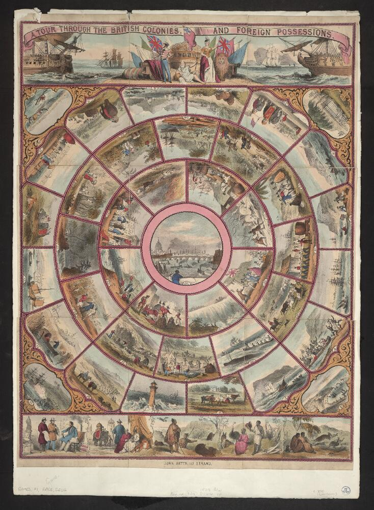
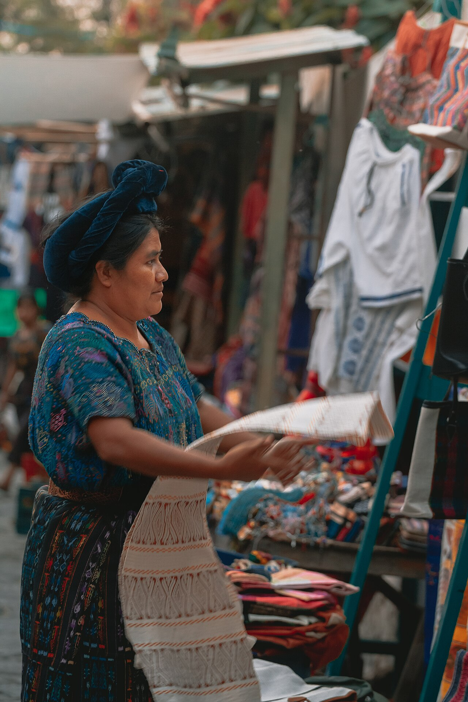
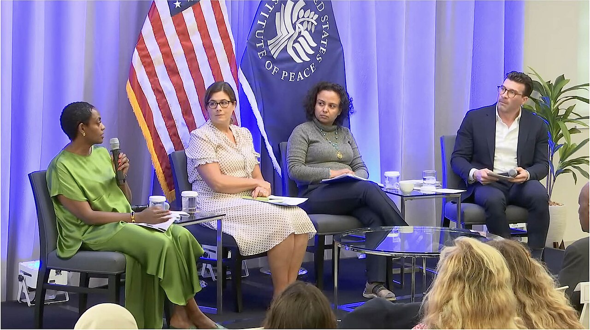
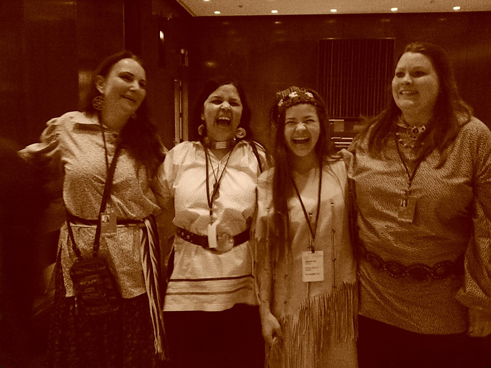
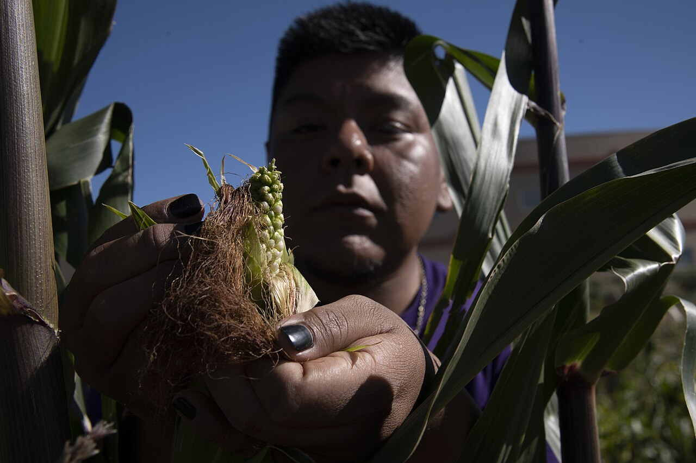

Globalization & Culture Change
No culture has ever sat still, and none has ever been alone. Long before anyone used the word globalization, shell valuables circulated the kula ring across the Massim islands, silver from Potosí financed Chinese silk, and beaver pelts from the Great Lakes reshaped Cree kinship. What is new in the last five centuries is the scale and the asymmetry of the connection — the fact that European colonial empires reorganized most of the planet's societies on terms those societies did not choose, and that the world economy those empires built still sorts people into winners and losers. This chapter is about that long encounter: how colonialism made the modern world (and made anthropology), how goods, people, and ideas now move at unprecedented speed, and how communities from the Andes to Aotearoa have refused the ending that was written for them.
By the end of this chapter you can
- Define colonialism, distinguish its major forms, and describe the colonial encounter as a transformation of both colonized and colonizer.
- Explain anthropology's own entanglement with empire and how Boas, Malinowski, and later critics such as Talal Asad figure in that story.
- Define globalization and analyze global flows using Wallerstein's world-systems model and Appadurai's five “scapes.”
- Contrast cultural homogenization with hybridity, creolization, and glocalization, using real ethnographic cases.
- Distinguish types of migration and explain transnationalism, diaspora, and the role of remittances in transnational identity.
- Define revitalization movement in Anthony F. C. Wallace's sense and describe its stages with real examples.
- Distinguish genocide from ethnocide and summarize the modern framework of Indigenous rights (UNDRIP, ILO 169, FPIC, NAGPRA).
- Describe how local communities resist, accommodate, appropriate, and revitalize in the face of global change, and explain multi-sited ethnography.
Section 1Colonialism

What colonialism was, and what it did
Colonialism is the political, economic, and cultural domination of one people by another over an extended period, backed by force and administered from a distant metropole. It is not a single thing. Anthropologists distinguish settler colonialism, where colonists come to stay and displace the original inhabitants (the United States, Canada, Australia, South Africa); extractive or exploitation colonialism, where a thin administrative layer governs a large local population in order to move minerals, rubber, or cash crops outward (the Belgian Congo, the Dutch East Indies); and plantation colonialism, which ran on coerced labor — roughly 12.5 million people were forced aboard slave ships in the transatlantic trade alone, of whom about 10.7 million survived the crossing — to grow sugar, cotton, and coffee for distant markets.
The consequences were never only economic. Colonial rule rearranged the deepest structures anthropologists study. Political organization was flattened: societies that had been organized as bands, tribes, and chiefdoms in Elman Service's typology were encapsulated inside states whose borders were drawn in European conference rooms — most infamously at the Berlin Conference of 1884–85, which set the rules by which Africa was partitioned with almost no reference to the peoples living there. Exchange was reorganized: economies that had run largely on reciprocity and redistribution, in Karl Polanyi's three-part scheme, were pulled by taxation, wage labor, and cash cropping toward the market principle. Head taxes payable only in colonial currency were a deliberate instrument for this — you cannot pay a tax in yams, so you must sell your labor.
Descent systems were altered too. Colonial land registration typically recorded a single male “head” of household, which quietly eroded women's land rights in matrilineal societies and hardened fluid, negotiable lineage claims into fixed legal title. Anthropologists also learned to be suspicious of the word tribe itself: as Aidan Southall and others argued, many named “tribes” are partly colonial artifacts, produced when administrators needed bounded, countable units with identifiable chiefs to govern through — the system Frederick Lugard formalized as indirect rule.
| Form | How it worked | Example | Cultural consequence |
|---|---|---|---|
| Settler | Colonists come to stay; land is the prize; original inhabitants displaced or confined | Australia, Canada, U.S. West, South Africa | Dispossession, reserves/reservations, boarding schools, language loss |
| Extractive | Small administrative elite governs a large local population to move resources out | Belgian Congo, Dutch East Indies | Forced labor, cash-crop dependency, distorted local economies |
| Plantation | Coerced or indentured labor imported to work export monocrops | Caribbean sugar, Brazilian coffee, Fiji (Indian indenture) | Creolized new societies, enduring racial hierarchies |
| Indirect rule | Empire governs through selected “traditional” authorities it recognizes and pays | British Nigeria, Northern Rhodesia | “Tribes” and chiefships hardened, sometimes invented outright |
| Internal colonialism | A state treats a region or minority within its own borders as a colony | Various post-independence states | Persistent marginalization without a foreign flag |
Anthropology's own entanglement
Anthropology grew up inside the empire, and honest teaching says so. Sir James Frazer wrote The Golden Bough (1890) without leaving his study, synthesizing reports mailed home by missionaries, district officers, and traders — the “armchair” method, dependent on a colonial information pipeline and organized around an evolutionary ladder from magic to religion to science that placed Europe conveniently at the top. Bronisław Malinowski broke with the armchair by living in the Trobriand Islands from 1915 to 1918, but he did so as an enemy alien paroled into a British-administered territory; his celebrated study of the kula ring was made possible by the very colonial peace he was documenting. E. E. Evans-Pritchard undertook his Nuer research in the 1930s at the request of the Anglo-Egyptian Sudan government, shortly after military expeditions against the Nuer — a fact he acknowledged with discomfort.
In 1973 Talal Asad's edited volume Anthropology and the Colonial Encounter forced the discipline to reckon with this. His argument was not that anthropologists were spies but something subtler and harder: that anthropological knowledge was produced under conditions of radically unequal power, which shaped what could be asked, who would answer, and what got published. Yet the same discipline also produced empire's sharpest critics. Franz Boas spent his career dismantling scientific racism and the evolutionary ranking of cultures, insisting on historical particularism and cultural relativism — that each culture must be understood in its own terms and its own history rather than as a rung on a universal ladder. Margaret Mead, his student, used Coming of Age in Samoa (1928) to argue that adolescent turmoil was cultural rather than biological, turning ethnography outward as a critique of the anthropologist's own society. Boas also drove salvage ethnography, the urgent recording of Northwest Coast languages and ceremonies under assimilationist pressure — a project whose paternalism is now criticized, but whose archives are today actively used by Kwakwa̱ka̱'wakw and other nations in their own language revitalization.
The legacy
Formal empires ended; their architecture did not. Postcolonial states inherited straight-line borders, export-dependent economies, and administrative categories that had been made rigid on paper. Clifford Geertz's Agricultural Involution (1963) traced how the Dutch Cultivation System in Java forced sugar and indigo onto peasant rice land, driving an ever more elaborate labor-absorbing rice agriculture that fed more people at steadily lower per-capita returns — a poverty with a specific colonial genealogy, not a timeless condition. In Rwanda, Belgian administrators issued identity cards fixing every person as Hutu, Tutsi, or Twa, converting a flexible and partly occupational distinction into a hereditary racial one with catastrophic downstream consequences. Structural violence — a term coined by the peace researcher Johan Galtung in 1969 and brought into anthropology by Paul Farmer — names the outcome anthropologists now trace in Haiti and elsewhere: harm produced not by a visible perpetrator but by durable arrangements of poverty, land tenure, and political exclusion laid down centuries ago. Neocolonialism describes the continuation of that dependency through debt, trade terms, and corporate power rather than through governors and garrisons.
- Colonialism takes several forms — settler, extractive, plantation, indirect rule, internal — each with distinct cultural consequences.
- Colonial rule pulled societies from reciprocity and redistribution toward the market, and encapsulated bands, tribes, and chiefdoms inside imposed states.
- Anthropology emerged within empire: Frazer's armchair comparison, Malinowski's and Evans-Pritchard's colonially permitted fieldwork; Asad (1973) named the problem.
- Boas and Mead used the same discipline against racism and ethnocentrism; salvage ethnography's archives now serve revitalization.
- The legacy persists as neocolonialism and structural violence, not merely as memory.
Section 2Globalization

Not new, but newly fast
Globalization is the accelerating worldwide integration of economies, politics, communication, and culture — and the increasing consciousness of the world as a single place. Anthropologists insist on two correctives. First, it is old. Eric Wolf's Europe and the People Without History (1982) demolished the idea that anthropology studies isolated societies onto which history later arrived: the Cree and Ojibwa hunters of the North American fur trade, he showed, were already deeply enmeshed in a world market by the seventeenth century, reorganizing their kinship, settlement, and hunting around European demand for pelts. There are no people without history. Second, globalization is uneven. Immanuel Wallerstein's world-systems theory divides the global economy into a core that captures high-value production, a periphery that supplies raw materials and cheap labor, and a semi-periphery in between — a structure inherited directly from the colonial division of labor described in Section 1.
What is genuinely new is velocity. David Harvey's time-space compression names the collapse of the friction of distance: a container ship, a wire transfer, and a video call each shrink the world in a different way. The market principle, once one mode of exchange among Polanyi's three, is now the dominant idiom of value nearly everywhere — though reciprocity and redistribution never disappeared. They persist inside the global economy, which is precisely why a Filipino nurse in Dubai sends money home on a schedule that looks nothing like a market transaction and everything like a kinship obligation.
Five scapes: how to see a global flow
Arjun Appadurai's Modernity at Large (1996) gave anthropology its most useful vocabulary for this. He argued that global flows are disjunctive — they do not move together or arrive in step. Money, people, machines, images, and ideologies each travel their own path at their own speed, and the friction between them is where the interesting cultural work happens. He called these five dimensions scapes, using the suffix deliberately: like a landscape, each looks different depending on where you are standing.
| Scape | What flows | Example |
|---|---|---|
| Ethnoscape | People — migrants, refugees, tourists, guest workers, students | Filipino and Kerala nurses across the Gulf and North America |
| Technoscape | Machinery and technical know-how across borders | Smartphone assembly split across a dozen countries |
| Financescape | Capital, currency, credit, remittances | Over $650 billion in remittances sent to low- and middle-income countries yearly |
| Mediascape | Images, narratives, and the means of producing them | Nollywood films circulating across Africa and its diasporas |
| Ideoscape | Political ideas and keywords — rights, sovereignty, democracy | “Indigenous rights” as a globally usable claim (Section 4) |
Homogenization or hybridity?
The nightmare version of globalization is cultural homogenization: one world, one menu, one soundtrack. George Ritzer's “McDonaldization” thesis argued that the fast-food logic of efficiency, calculability, predictability, and control was colonizing every institution, and cultural imperialism named the fear that Western media would simply overwrite local meaning. Real ethnography complicates this sharply. James Watson's Golden Arches East (1997) found that McDonald's in East Asia was thoroughly indigenized: in Beijing it became a place to linger for hours rather than eat and leave, in Hong Kong a children's birthday-party venue that supplied a ritual form Cantonese culture had not previously had, and across the region a rare source of clean public restrooms and a socially acceptable space for young women to sit alone. Daniel Miller's work in Trinidad showed Coca-Cola absorbed into local categories of “black sweet drink” and mixed with rum, becoming a marker of Trinidadian identity rather than an American one.
The concepts that capture this are hybridity (new cultural forms from the meeting of distinct traditions), creolization (borrowed from linguistics, where contact produces a full new language with its own grammar — Haitian Kreyòl, Tok Pisin), indigenization (a foreign import reworked to serve local meanings), and glocalization (global products deliberately adapted to local markets). None of this makes globalization harmless. Power still runs downhill: the flows are real, the losses are real, and the fact that people creatively rework what arrives does not mean they chose what arrived.
- Globalization is old but newly fast; Wolf showed there are no people without history.
- World-systems theory (core / semi-periphery / periphery) explains why the flows are unequal; time-space compression explains why they are quick.
- Appadurai's ethno-, techno-, finance-, media-, and ideoscapes are disjunctive — they move at different speeds.
- Ethnography repeatedly finds indigenization and hybridity where theory predicted homogenization (Watson on McDonald's, Miller on Coca-Cola).
- Creative local reworking does not cancel the power asymmetry that delivered the goods.
Section 3Migration and diaspora

Kinds of movement
Roughly one person in thirty now lives outside their country of birth — about 280 million people — and far more have moved within their own country's borders. Anthropologists resist the flat language of “push and pull” factors, useful as it is, because it makes migration sound like weather rather than a decision made by people inside families, obligations, and histories. Households, not individuals, are usually the decision-making unit: a family invests in sending one member abroad, and that member carries the debt and the duty.
The legal categories matter enormously to the people sorted into them. A refugee has crossed an international border with a well-founded fear of persecution and is protected under the 1951 Refugee Convention; an internally displaced person has fled the same violence but not crossed a border, and has far weaker protection; a labor migrant may be doing exactly the same work as either but is legally treated as a matter of economics. Circular migration — seasonal movement out and back — is one of the oldest patterns of all.
| Category | Defining feature | Anthropological point |
|---|---|---|
| Labor migrant | Moves primarily for work, often on a temporary visa | Usually a household strategy, not an individual escape |
| Circular migrant | Repeated seasonal out-and-back movement | Very old pattern; keeps home ties and land claims alive |
| Refugee | Crossed a border fleeing persecution; Convention-protected | Legal status shapes identity, work rights, and belonging |
| Internally displaced person | Fled but did not cross a border | Same danger, far weaker international protection |
| Diaspora | Dispersed population maintaining a homeland orientation | Identity sustained across generations, not just distance |
| Transmigrant | Lives socially in two or more countries at once | Not “leaving” and “arriving” but sustaining both |
Transnationalism: living in two places at once
The older model assumed a one-way trip ending in assimilation. In the early 1990s Nina Glick Schiller, Linda Basch, and Cristina Blanc-Szanton proposed transnationalism instead: migrants who build and sustain multi-stranded social fields linking home and host society are better called transmigrants. They vote in two countries, hold obligations in two kinship networks, and are physically present in one place while socially present in another. Peggy Levitt's The Transnational Villagers (2001) followed a single Dominican community, Miraflores, and its migrants in Boston, and found the village and the neighborhood functioning as one social unit: money flowed one way, and what Levitt called social remittances — ideas about gender, politics, child-rearing, and consumption — flowed back the other way, changing Miraflores as much as the cash did.
Financial remittances are among the largest and most reliable flows in the world economy, exceeding total official development aid to low- and middle-income countries by a wide margin. They also restructure kinship. The matrilineal Minangkabau of West Sumatra practice merantau, a culturally elaborated pattern in which young men leave to make their way in the wider world while ancestral rice land and houses continue to pass through the female line — a matrilineal descent system that has absorbed centuries of male out-migration without dissolving. Elsewhere, transnational families invent new forms: “astronaut” households split across the Pacific, and children raised by grandparents while parents work abroad, a pattern documented among Filipino and Caribbean families and sometimes termed transnational motherhood.
Diaspora and the shape of identity
A diaspora is a population dispersed from a homeland that maintains a collective memory of and orientation toward that homeland — the Jewish, Armenian, African, South Asian, and Palestinian diasporas among the classic cases. Stuart Hall argued that diasporic identity is not a fixed essence recovered from the past but a continual production: not simply being, but becoming. Second-generation members are rarely torn cleanly between two cultures; more often they assemble a third thing that belongs to neither parent society.
Two classic tools illuminate the experience. Arnold van Gennep's rites de passage (1909) described the three-phase structure of transitions — separation, liminality, incorporation — and Victor Turner developed the middle phase, showing that liminal people are betwixt and between, structurally ambiguous, and often bound to one another by intense communitas. Migration reproduces this structure exactly, but with a cruel difference: the liminal phase can last for years or decades. An asylum seeker awaiting a decision, or a person with temporary status who cannot travel home, is separated but never incorporated — a permanent liminality that ritual theory says human societies find nearly intolerable, which is why migrant communities build such dense mutual-aid associations, hometown societies, and congregations.
- Migration is usually a household strategy; legal categories (refugee, IDP, labor migrant) profoundly shape lived experience.
- Transnationalism replaced the one-way assimilation model; transmigrants sustain social fields in two or more countries.
- Remittances exceed development aid; Levitt's social remittances carry ideas back to the sending community.
- Diasporic identity is produced, not recovered (Hall); it is becoming as much as being.
- Van Gennep and Turner's liminality illuminates migration — and prolonged legal limbo is liminality with no incorporation phase.
Section 4Cultural survival

Revitalization movements
When a society is subjected to sustained stress that its existing culture cannot absorb, one common response is a deliberate attempt to build a better one. Anthony F. C. Wallace, working from the history of the Seneca prophet Handsome Lake, defined a revitalization movement in 1956 as “a deliberate, organized, conscious effort by members of a society to construct a more satisfying culture.” The word deliberate is doing heavy work: these movements are not spasms of irrationality but purposeful cultural engineering, usually launched by a prophet who has had a transformative vision and who assembles a new synthesis from old and borrowed elements.
Wallace described a sequence: a steady state; a period of individual stress as the old order stops delivering; cultural distortion, when the society's institutions are visibly failing and pathology spreads; the revitalization phase itself, which begins with what Wallace called mazeway reformulation — a prophet's wholesale reorganization of the mental map by which a person navigates the world — and proceeds through communication, organization, adaptation, cultural transformation, and routinization; and finally a new steady state. Handsome Lake's Gaiwiio, revealed in visions beginning in 1799 amid land loss and alcohol devastation, fused Seneca tradition with selected Quaker elements and became the Longhouse Religion, still practiced today. The Ghost Dance, taught by the Paiute prophet Wovoka in 1889, promised that ceremonial dancing would restore the game and reunite the living with the ancestors; Wovoka preached peace and explicitly forbade violence, but its spread across the Plains alarmed U.S. authorities, and the attempt to suppress it culminated in the massacre of some three hundred Lakota — most of them women, children, and elders — at Wounded Knee in December 1890. The dance itself was not extinguished there; it continued quietly among several nations well into the twentieth century. Melanesian movements once labeled “cargo cults” — the John Frum movement on Tanna, Vanuatu, is the best known — are now read far more carefully: less as confusion about Western goods than as sophisticated ritual and political responses to the staggering wealth disparity revealed by colonial and wartime contact. Many anthropologists avoid the term entirely because of its condescending history.
| Movement | Setting | Prophet / leader | Character |
|---|---|---|---|
| Longhouse Religion (Gaiwiio) | Seneca, New York, from 1799 | Handsome Lake | Synthesis of Seneca tradition with Quaker elements; still practiced |
| Ghost Dance | Great Basin and Plains, 1889–90 | Wovoka (Paiute) | Ritual renewal of a destroyed world; suppressed at Wounded Knee |
| Native American Church | Plains and Southwest, from the 1880s | Multiple | Pan-Indian peyote religion; legally protected in the U.S. since 1994 |
| John Frum | Tanna, Vanuatu, from the 1930s | John Frum (figure) | Ritual-political response to colonial and wartime inequality |
| Māori Kōhanga Reo | Aotearoa New Zealand, from 1982 | Community elders | “Language nests” — revitalization through early-childhood immersion |
Genocide, ethnocide, and the rise of a rights framework
Two terms must be kept distinct. Genocide is the destruction of a people. Ethnocide (or cultural genocide) is the destruction of a people's culture while the people themselves survive — banning a language, outlawing a ceremony, removing children. The residential and boarding school systems of Canada, the United States, and Australia were ethnocidal by design; Richard Henry Pratt, founder of the Carlisle Indian Industrial School, stated the program with appalling clarity in 1892 as the intent to “kill the Indian” in order to “save the man.” Canada's Truth and Reconciliation Commission concluded in 2015 that the residential school system amounted to cultural genocide, and the Stolen Generations of Australia name a parallel history.
Against this, Indigenous peoples built an international legal vocabulary — a textbook case of Appadurai's ideoscape flowing in an unexpected direction. ILO Convention 169 (1989) recognized Indigenous and tribal peoples' rights to land and consultation. The UN Declaration on the Rights of Indigenous Peoples (UNDRIP), adopted in 2007 after more than two decades of Indigenous-led negotiation, affirms self-determination, cultural integrity, and land rights, and enshrines free, prior, and informed consent (FPIC) — the principle that projects on Indigenous lands require genuine consent obtained before the fact. In the United States, NAGPRA (1990) requires federal agencies and museums that receive federal funding to repatriate ancestral remains, funerary and sacred objects, and objects of cultural patrimony to lineal descendants and affiliated nations, reversing a century of collecting practice that had swept up material during the salvage era described in Section 1. Advocacy organizations such as Cultural Survival, founded by the anthropologists David and Pia Maybury-Lewis in 1972, and Survival International work alongside these instruments.
Bringing languages back
Roughly 40 percent of the world's some 7,000 languages are endangered, and a language dies roughly every few weeks — taking with it, as linguistic anthropologists emphasize, a distinct way of encoding kinship, landscape, and ecological knowledge. This is the defensible core of linguistic relativity — the Sapir-Whorf hypothesis in its moderate form, that language habitually channels attention and categorization, rather than the discredited strong claim that it imprisons thought. Revitalization works when communities control it. Hawaiian had fallen to roughly 2,000 native speakers, fewer than fifty of them children, before the Pūnana Leo immersion preschools opened in 1984, modeled partly on the Māori kōhanga reo “language nests” begun in 1982; both now feed full immersion school systems and thousands of new speakers. The Wôpanâak Language Reclamation Project, led by jessie little doe baird from 1993, brought back a language with no living speakers using seventeenth-century documents — including a Wampanoag-language Bible — and produced the first new native speaker in seven generations. Modern Hebrew remains the largest-scale case of a liturgical language returned to daily use.
- A revitalization movement (Wallace, 1956) is a deliberate, organized effort to build a more satisfying culture; its stages run steady state → stress → cultural distortion → revitalization → new steady state.
- Handsome Lake's Longhouse Religion, the Ghost Dance, and Melanesian movements are classic cases; “cargo cult” is now widely rejected as a label.
- Ethnocide destroys a culture while the people survive; boarding and residential schools are the paradigm case.
- UNDRIP (2007), ILO 169, FPIC, and NAGPRA form the modern Indigenous-rights framework.
- Language nests (kōhanga reo, Pūnana Leo) and archival reclamation (Wôpanâak) show revitalization succeeding under community control.
Section 5The local and the global

Four ways communities answer
Global change does not arrive as a verdict. Mid-century anthropology gathered culture change under the single heading of acculturation — change produced by sustained firsthand contact between societies — but the word flattened too much, since it said nothing about who held the power or what the receiving community was trying to accomplish. Ethnography across the last four decades shows communities responding instead along a recognizable repertoire: resistance (open or, in James Scott's phrase, through the “weapons of the weak” — foot-dragging, evasion, sabotage, gossip), accommodation (selective adoption on the community's own terms), appropriation (taking the tools of global culture and turning them to local purposes), and revitalization (Section 4). Marshall Sahlins compressed the central insight into a phrase: what looks like development is often “develop-man” — the use of foreign goods and money to pursue thoroughly local projects of prestige, kinship, and ritual obligation. He called the broader phenomenon the indigenization of modernity: people using the world system to develop their own culture.
Appropriation is the most striking. In 1989 the Kayapó of the Brazilian Amazon, whose video work Terence Turner documented, took camcorders to the Altamira gathering against the Xingu dam and recorded the proceedings themselves — producing both an internal archive and a global media event, in full ceremonial regalia, on their own terms. The Zapatistas of Chiapas turned the internet into a weapon of a peasant rebellion in 1994 — not from the jungle directly, but by writing communiqués that a global network of supporters carried online within hours, outflanking the Mexican state's control of the story. In Central Australia, Warlpiri people at Yuendumu built their own media association from the early 1980s, and remote communities across the continent later ran radio and television under the BRACS scheme; acrylic painting, a foreign medium taken up at Papunya from 1971, became a means of asserting Dreaming-track land claims in a form outsiders would pay attention to and pay for.
| Response | What it looks like | Ethnographic example |
|---|---|---|
| Resistance | Refusal, protest, or Scott's everyday “weapons of the weak” | Anti-dam mobilization on the Xingu; peasant foot-dragging in Malaysia |
| Accommodation | Selective, conditional adoption | McDonald's remade as a Hong Kong birthday venue (Watson) |
| Appropriation | Global tools turned to local ends | Kayapó video; Zapatista internet; Warlpiri media |
| Revitalization | Deliberate cultural reconstruction | Kōhanga reo; Longhouse Religion |
| Hybridization | New forms from the meeting of traditions | Creole languages; Nollywood; Otavalo textiles in world markets |
Heritage, tourism, and the price of being watched
One of the sharpest dilemmas of the local-global encounter is that culture now has a market value. UNESCO's Intangible Cultural Heritage convention (2003) extended heritage protection beyond monuments to living practices — songs, crafts, festivals, foodways — which is a genuine victory and also a pressure, since inscription tends to fix a version of a practice that was previously fluid. Ethnic tourism brings income and can strengthen a community's hand, but Dean MacCannell's staged authenticity names what often results: a front region performed for visitors while real life retreats backstage. Kathleen Adams's long research among the Toraja of Sulawesi traced how their elaborate funerals became a tourist attraction and how Toraja people themselves debated, managed, and profited from that attention rather than simply suffering it. The Otavaleños of highland Ecuador have been perhaps the most successful case: weavers who turned a colonial-era obrajes textile tradition into a global business, traveling to sell in Bogotá, Amsterdam, and Tokyo while reinvesting in Otavalo itself and maintaining Kichwa language and dress as deliberate markers of identity.
The unresolved questions are real. Who owns a design, a song, a seed variety, or a plant's medicinal knowledge? Biopiracy disputes — over the neem tree, over quinoa, over pharmaceutical prospecting in the Amazon — turn on whether collective, undocumented knowledge can be patented by an outsider. Fair-trade and geographic-indication schemes are partial answers; so is the FPIC principle from Section 4, applied to knowledge as well as land.
How anthropologists study a world in motion
If the object of study no longer sits in one village, the method must change. George Marcus's 1995 essay on multi-sited ethnography proposed following the thing, the person, the metaphor, the story, or the conflict across the sites that constitute it — studying a mango or a T-shirt from farm to container ship to supermarket, or a family across Miraflores and Boston as Levitt did. Laura Nader's earlier call to study up (1972) pushed the same direction from below: anthropology had studied the powerless thoroughly and the powerful barely at all, and understanding globalization requires ethnographies of banks, regulators, corporations, and NGOs. Geertz's thick description remains the standard of craft — the difference between a twitch and a wink is still the difference between recording behavior and understanding meaning — but the wink now has to be followed through airports.
The discipline's final contribution is a stance. Cultural relativism is a method for understanding, not a refusal to judge, and it sits alongside a commitment to human rights that anthropologists have argued about since the American Anthropological Association's ambivalent 1947 statement on the draft Universal Declaration, which worried that a universal standard would smuggle in one civilization's values — a position the association substantially revised in its 1999 Declaration on Anthropology and Human Rights, which affirms human rights explicitly. Applied and engaged anthropologists now work on climate adaptation with Pacific Island and Arctic communities, on displacement, on health equity, and on repatriation. The core insight has not changed since Boas: no culture is a museum piece, no people is without history, and change is not the same thing as loss.
- Communities respond by resisting, accommodating, appropriating, revitalizing, and hybridizing — rarely by passively absorbing.
- Indigenization of modernity (Sahlins): global tools serve local projects — Kayapó video, Zapatista internet, Warlpiri media.
- Heritage and tourism monetize culture, producing income, staged authenticity (MacCannell), and hard questions about ownership and biopiracy.
- Multi-sited ethnography (Marcus) and studying up (Nader) are the methods a global object of study demands.
- Cultural relativism is a tool for understanding, not a bar to advocacy; change is not the same thing as loss.
The chapter in one breath
- Colonialism — settler, extractive, plantation, indirect — reorganized political systems, exchange, and descent worldwide, and its legacy persists as neocolonialism and structural violence.
- Anthropology grew up inside empire (Frazer's armchair, Malinowski's permitted fieldwork, Asad's 1973 reckoning) and also produced its critics (Boas, Mead).
- Globalization is old but newly fast; Wolf showed there are no people without history, and world-systems theory shows why the flows are unequal.
- Appadurai's five scapes move disjunctively; ethnography keeps finding hybridity and indigenization where theory predicted homogenization.
- Transnationalism replaced the assimilation model: transmigrants live in two social worlds, and remittances (financial and social) run both ways.
- Diasporic identity is produced, not recovered; van Gennep and Turner's liminality explains why legal limbo is so corrosive.
- Revitalization movements (Wallace) are deliberate cultural repair, and UNDRIP, FPIC, and NAGPRA give those claims global legal form.
- Communities resist, accommodate, appropriate, and revitalize — indigenization of modernity — and anthropologists now follow them with multi-sited methods.
ReferenceWords worth knowing
A quick reference for the terms in this chapter — skim it now, or circle back whenever a word trips you up.
- Acculturation
- Cultural change resulting from sustained firsthand contact between societies, often (though not always) with one in a dominant position.
- Appadurai's scapes
- Five disjunctive dimensions of global flow — ethnoscape, technoscape, financescape, mediascape, ideoscape.
- Biopiracy
- The appropriation and patenting of local biological resources or traditional knowledge without consent or benefit-sharing.
- Colonialism
- Long-term political, economic, and cultural domination of one people by another, backed by force and administered from a metropole.
- Creolization
- The emergence of a new, fully formed cultural or linguistic system out of sustained contact between distinct traditions.
- Cultural imperialism
- The spread of a dominant society's culture at the expense of others, whether by policy or by market power.
- Diaspora
- A population dispersed from a homeland that maintains collective memory of, and orientation toward, that place of origin.
- Ethnocide
- Destruction of a people's culture — language, ceremony, kinship transmission — while the people themselves survive; also called cultural genocide.
- Free, prior, and informed consent (FPIC)
- The principle, central to UNDRIP, that Indigenous communities must genuinely consent, in advance, to projects affecting their lands or knowledge.
- Genocide
- The destruction of a people itself, as distinct from ethnocide, which destroys a culture while its people survive.
- Globalization
- Accelerating worldwide integration of economies, politics, communication, and culture, together with the growing awareness of the world as one place.
- Glocalization
- The deliberate adaptation of a global product, practice, or institution to a specific local market or context.
- Hybridity
- New cultural forms produced when distinct traditions meet and combine.
- Indigenization of modernity
- Sahlins's term for people using global goods, media, and institutions to pursue their own culturally specific projects.
- Linguistic relativity
- The moderate Sapir-Whorf claim that a language habitually shapes what its speakers notice and how they categorize — not that it determines what they can think.
- Multi-sited ethnography
- Marcus's method of following a person, object, story, or conflict across the several places that constitute it.
- Neocolonialism
- Continued domination of formerly colonized nations through debt, trade terms, and corporate power rather than direct rule.
- Postcolonialism
- The critical study of colonialism's ongoing effects on knowledge, identity, and power after formal independence.
- Remittance
- Money sent home by a migrant; social remittances (Levitt) are the ideas, norms, and practices that travel back with it.
- Revitalization movement
- Wallace's term for a deliberate, organized, conscious effort by members of a society to construct a more satisfying culture.
- Staged authenticity
- MacCannell's term for a performed “front region” of culture presented to tourists while ordinary life continues backstage.
- Structural violence
- Harm inflicted by durable social, political, and economic arrangements rather than by an identifiable perpetrator.
- Transnationalism
- The maintenance by migrants of dense, ongoing social, economic, and political ties across national borders.
- World-systems theory
- Wallerstein's model of a single global economy divided into core, semi-periphery, and periphery.